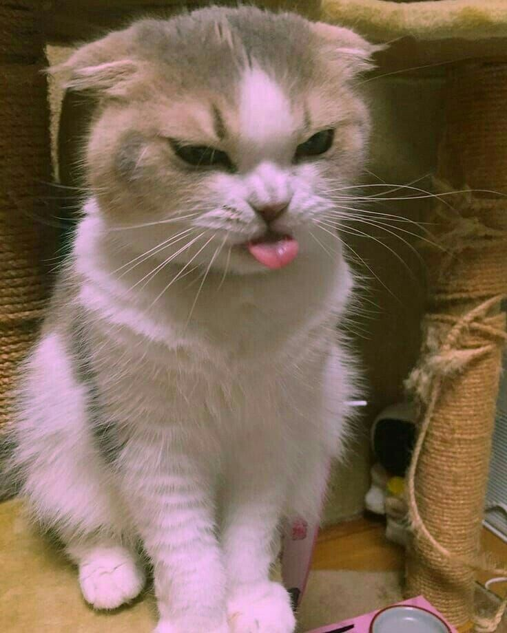

Sé que a veces las cosas no salen como esperamos, y puede que estos dias no hayan sido los mejores. Pero quiero que sepas que estoy aquí para ti, siempre. Si necesitas hablar, desahogarte, o simplemente un abrazo, cuenta conmigo. No estás sola, estoy a tu lado para apoyarte en todo momento.
Se que te hacen reir mucho esta clase de videos, asi que elegi estos para que te alegre un poco el dia